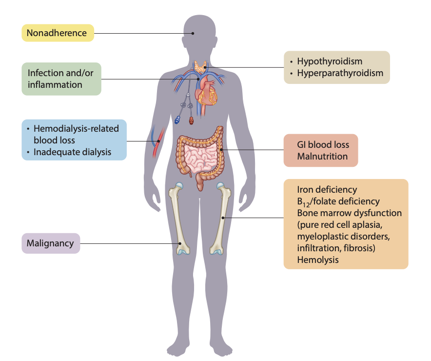

Munuaisten vajaatoiminta CKD
Anemia - Rauta
| Population | Initiate Iron If… |
|---|---|
| CKD G5 hemodialysis (G5HD) | Ferritin ≤500 ng/ml and TSAT ≤30% (Rec. 2.1, 2D) |
| Non-dialysis or peritoneal dialysis (G5PD) | Ferritin <100 ng/ml and TSAT <40%; or Ferritin 100–300 ng/ml and TSAT <25% (Rec. 2.3, 2D) |
| Any CKD with profound deficiency (no anemia) | Ferritin <30 ng/ml and TSAT <20% — consider oral or IV iron (PP 2.11) |
Rutiinisti ei tarvitse antaa jos ferrit >700 tai TSAT > 40% ^1
Anemia - muut
Jos ei muuta korjattavaa syytä löydy, niin ensilinjassa aloitetaan EPO. EPO target Hb 115g/l

Siirre
Ohjeita löytyy: https://www.sny.fi/transplantaatio/